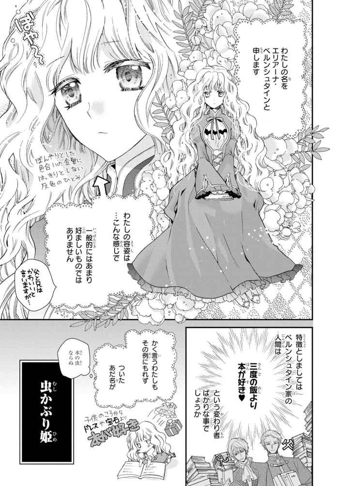
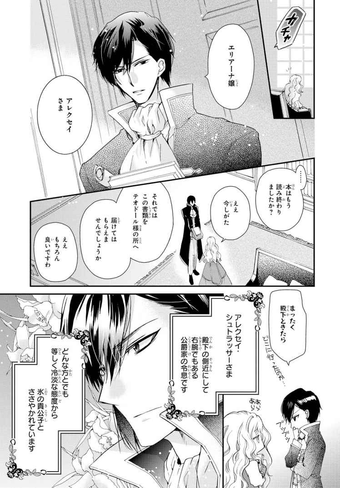
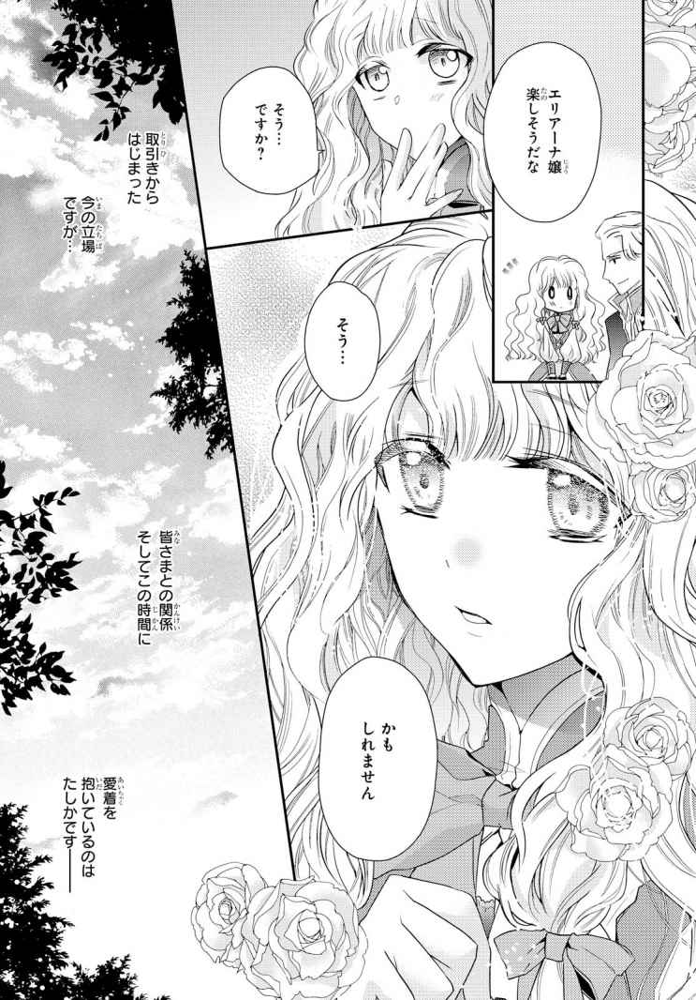
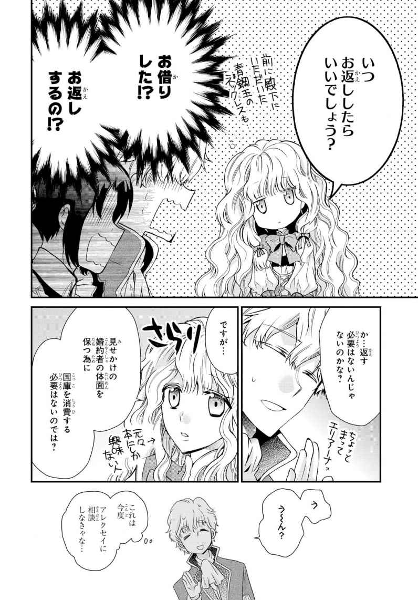
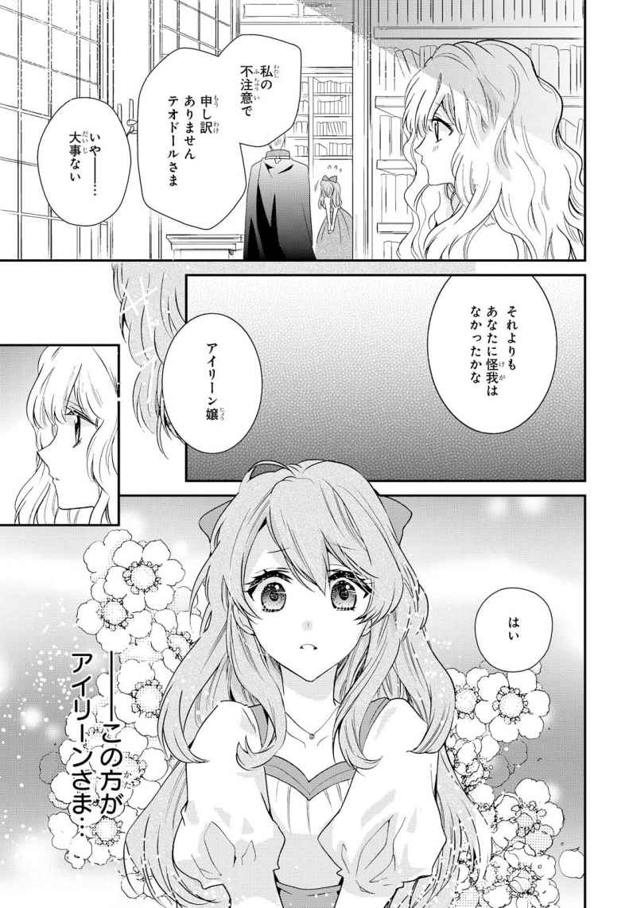

| 虫かぶり姫 ノベル＆コミック試読版 | |
| 由唯 & 喜久田 ゆい | |
| 一迅社 (2019) | |








一幕、見せかけの婚約者
聞き覚えのある笑い声が響いてきた時、わたしはあやうく梯子 の段から足を踏み外すところでした。
ビックリして視線をおろせば、換気のために開けられた窓の外、王宮の奥庭にあたる木 蔭 に二人の人影が見えました。お一人はとてもよく知っているお方です。
我がサウズリンド王国第一王位継承者、クリストファー殿下。御歳二十一になられる、聡明で英 邁 な、将来を嘱望される若き王太子さまです。
ふだんの殿下は際立ったそのご容姿をあますところなく活 かして年 頃 のご令嬢から妙齢の貴婦人をも魅了し、英明な判断力と先見の明でもって老 獪 な貴族をも従える、若くして王者たる風格を備えた方ともっぱらの評判です。
人前では隙 を見せない王太子っぷりを発揮するお方が、くったくなく声を上げて笑われるなどと。
そんな無防備な――。
四年間、わたしは殿下のおそばに上がってお仕えし、おそれながらそのお人柄も理解していたからこそ、その光景に驚 愕 しきりでした。
殿下とて人の子。声を上げて笑われることもあれば、軽口を叩 いて年相応のお顔を見せられる時もあります。ですが、それはごくごく内輪の中に限っていました。
権謀術数ひしめくこの王宮内で奥庭とはいえ、だれの目に留まるやも知れないのに無防備なそのご様子に、わたしの胸は鋭く重たく痛みました。
そうして、そっとため息をつきました。
その時が来たのだと。
～・～・～・～・～
わたしは名を、エリアーナ・ベルンシュタインと申します。
サウズリンド王国で侯爵の位を賜った貴族の娘ですが、わたしには他 のご令嬢にはない肩書が付随していました。
サウズリンド王国、第一王位継承者、クリストファー殿下の婚約者、という立場です。
四年前の十四の歳、片 田舎 の領地から華やかな王都へと足を踏み入れ、社交界デビューしたわたしは、きらびやかなご婦人方とご令嬢たちに圧倒されているうち、なぜかクリストファー殿下の婚約者としておそばに召し上げられていました。
ベルンシュタイン家は一応侯爵家ではありますが、内実は力ある伯爵家にも劣る末席中の末席です。そんな家の娘がなぜ、王太子殿下の婚約者に選ばれたかというと――。
残念ながら、世の女性たちを喜ばせるようなロマンス的なものはいっさいありません。わたしの容姿が優れて見目麗しいものゆえ、そばに望まれた――など、夢見がちな少女の憧 れのようなこともありません。
わたしの容姿は、ぼんやりとした色合いの細かくクセのある金髪に、同じようにはっきりとしない灰色がかった眸 、家族や親族は可愛 いと言ってくれる顔立ちも、他者からは不名誉なあだ名がつけられていたりする、一般的にあまり好ましいものではありません。
クリストファー殿下の日差しに輝くまばゆい金髪、晴れ渡った青空のような眸、際立った麗しいお顔立ちに、姿を現すだけで場が華やかになる存在感とはまるで正反対です。
そんな娘が、年頃のご令嬢方の憧れの的である、王太子殿下の婚約者に選ばれた理由――。それは、ただ単に都合がよかったのです。
我が家は宮廷内のどの派閥にも属さず、縁 戚 筋にもやっかいな権力者はおりません。そして父も兄も、権力ごとには興味を抱かない（――ある意味、宮廷貴族としては失格かも知れない）人種でした。
そしてわたし自身にも、想 い合うような特別な方がいるわけでもなかったため、昨今の宮廷内派閥の権力闘争を改める一手として、我が家に白羽の矢が立った次第です。
はじめてお逢 いした時に、クリストファー殿下はそのきらきらしいご容姿を輝かせておっしゃいました。
「――エリアーナ嬢。あなたは私の隣で本を読んでいるだけでいいよ」と。
我が家は代々、本好きの家系として有名です。領地にあるご先祖さまが建てた地域図書館は広く一般開放されており、その内容の多彩さと代々の侯爵家がそろえた稀 覯 本 の品ぞろえの多さは、王立図書館に勝るとも劣らないと言われております。
そんなベルンシュタイン家の人間は三度の飯より本が好き、という変わり者ばかりで、かく言うわたしもその例にもれず、字を覚える前から書物に埋もれて育ってまいりました。
女性ならば好むであろうドレスや宝石類よりも未知の本を好むわたしについたあだ名は――本の虫ならぬ、「虫かぶり姫」という、普通なら不名誉に嘆いてしかるべきものでした。
しかし、その「虫かぶり姫」でもクリストファー殿下のお申し出が奇矯であることはわかります。
一瞬、わたしは自分が殿下の朗読係にでも選ばれたのかと、トンチンカンな考えに思いをはせました。
首をかしげたわたしに殿下は先の派閥問題や権力抗争、ベルンシュタイン家の利点を挙げ、取り引きのように自身の要望をお話しになられました。
――有り体に言って。
さっさと婚約者を決めないと、王妃であらせられる母上さまや周りがうるさくてかなわないのだと。
「どうだろう、エリアーナ嬢。あなたも社交界デビューした年頃のご令嬢である限り、貴族の義務からは逃れられない。どこかの家のご夫人に収まって家政に追われ、貴婦人同士の交流会にふりまわされる未来よりも、私の隣で本を読むだけの生活を手に入れないかい？」
「......はぁ」
未来の貴族の奥方としての苦労より、目先の王太子殿下の婚約者としての気苦労のほうが想像に難くありません。
ちなみに――。
自国の麗しい王太子さまに対して、わたしの反応は不敬にあたるものだったかも知れません。が、ベルンシュタインの人間は興味があるもの（本）以外、等しく関心が薄かったので、わたしとしては通常対応だったのです。
クリストファー殿下はにこやかな笑みを浮かべておられました。
「私の婚約者ということになれば、伴 侶 探しの茶会や舞踏会を断れるし、その分、読書の時間が増えるよ。......まあ最低限、公式行事や王家主催のものには付き合ってもらうけれどね」
どのみち、王族からの申し出を弱小貴族が断れるはずもありません。殿下の申し出が破格のものであるのは、世知に疎いわたしにも理解できました。
つまり殿下は、恋愛感情抜きで一令嬢にすぎないわたしに取り引きを申し出てくれたようです。
............わざわざご苦労なことです。わたしは早くもこれからふりかかるであろう困難と、奪われるであろう読書の時間に憂 鬱 な思いでした。すると殿下はにっこり、悪魔のささやきをわたしに吹き込みました。
「それに、私の婚約者の肩書があれば、王宮書庫への出入りはもちろん――閲覧、貸出も自由だよ」
――ベルンシュタイン家の血は活字でできている。
そう、まことしやかにささやかれる家の娘であるわたしが、その申し出に飛び付かないはずがありません。
王宮書庫室はその名の通り、一般開放されている王立図書館とは異なり、王宮内にあって限られた者しか出入りが許されていない、王家秘蔵の蔵書が収められている、本好きには垂 涎 ものの聖地です。
ほんとうなら領地にこもって地域図書館長として悠々自適な本読み三 昧 を送りたい父と兄が、しぶしぶながらも王宮勤めをしている理由がそこにあります。
わたしがいつもうらやましく父と兄から聞いていた、王家所蔵の稀覯本の数々。
それを直に目にし、手に取り、未知なる世界にふれられるのです。本好きにとって、これ以上の至福があるでしょうか。
喜色満面に眸も輝かせたわたしに、クリストファー殿下も、それはきらきらしい笑顔で応じられました。
「では、婚約成立だね。私は婚約者探しというわずらわしさから解放され、あなたは貴族令嬢の縛りから解放される。私は――私の婚約者という責務をあなたに背負わせるかわりに、あなたの自由の時間を守ってみせよう。必ず」
その時はじめて、未知の本にふれた時のようにわたしの胸がドキリと鳴りました。
クリストファー殿下はそのお言葉通り、わたしを婚約者として発表した後は立場にふりまわすことなく、自由に読書させてくれました。
わたしも本当にそんなことが可能なのか、はじめは懐疑的でしたし、それこそ、当初は王妃さまや取り巻きのご夫人達からのひっきりなしのお茶会の誘い、女官たちからの質問攻め、高位貴族らの思惑に右往左往させられたものです。しかし、それも殿下やその側近方がいつの間にか如才なく収めてくれたようです。
以来四年間、人前にあまり出ない名ばかりの王太子婚約者として、とりあえずはつつがなく過ごしてまいりました。
そうしてようやっと、クリストファー殿下の真意がわたしにも見えてきたように思います。近頃、とみにささやかれている内容とも一致しております。
――成人を迎えられても殿下が成婚の儀を挙げられないのは、「虫かぶり姫」が噂 通り名ばかりの婚約者であり、権力闘争もひと段落ついた今、殿下はようやく意中の、真実心に想う姫君を妃に迎え入れられるのだと――。
噂を鵜 呑 みにすることはできません。しかし、わたしはそれを確証付ける事実も知っていました。
サウズリンド王国では男女共に、十八で成人とみなされます。女性が未成年でも、婚約相手の男性が成人に達していれば、よほど世間体に触りがないかぎり婚姻は可能です。しかし殿下はわたしがまだ幼いから、という理由でのらりくらりと成婚を先延ばしにしていました。
そうして、わたしが十八の成人を迎えたいまでも、成婚の話題は上ってきません。それが噂の信 憑 性 を高めてもいるのでしょう。
しかし、仕方がないのです。
わたしと殿下が交わしたのは、あくまで婚約時代の双方の利点の合致。王妃教育をほどこしてもいない娘を妃に迎えることはできないのです。
わたしたちの間に恋愛感情はなく、あったのはただの、年頃の男女が周囲から求められる立場への共闘のみ。
そしていま。
わたしは殿下が婚約破棄される日を、まるで読んだことがある物語のように理解して、その時が来たことを知ったのでした。
殿下と一緒におられるもうお一方は、少し前に後宮へ行儀見習いに上がったという子爵家のご令嬢です。
貴族令嬢が後宮へ行儀見習いに上がる理由は様々あります。婚礼前の花嫁修業の一環、縁談前の箔 付け、そして求職のため。
貴族の家のご令嬢でも、お家の事情で職を求められることはままあります。
その中でも王宮付きの女官や侍女は憧れの職であると聞きます。高位の方にお仕えするという名誉、そして王宮勤めの有望な殿方と知り合う機会や、もしかしたら、巷 の恋愛小説のように王族に見 初 められる可能性だって、決して皆無ではないのですから。
子爵家のご令嬢、お名前をアイリーン・パルカスさまとおっしゃられたと思います。
最近、なにかと話題のそのお方と、わたしは何度か遭遇しておりました。
はじめにお見かけしたのは、王宮書庫室です。書庫室勤めの職員の方々が口にしていたのを、小耳にはさんだのがはじまりでした。
――最近、行儀見習いに上がったご令嬢に、とても可愛らしい女性がいる、と。
それは、やわらかな手触りを思わせる栗 色 の髪に、見る者を惹 きつける明るい茶色の眸、華やかに周囲を彩る声で相手を飽きさせない、愛らしくも社交的な、魅力あふれる女性なのだと。
わたしとは正反対のご令嬢らしいとの印象を受け、幾度か後宮からの使いで書庫室にも現れるようになってお顔を覚えました。
あれはたまたま、梯子の傷みを見つけてどなたかにお知らせしようと人を探していた時です。休憩室の方から響いてきた声にわたしは顔をのぞかせました。
すると、室内いっぱいに茶葉の香りが広がっており、乱雑に倒れた茶器一式と、そのそばに、どうしましょう、とあわてるアイリーンさまの姿が見えました。
「私の不注意で......申し訳ありません。テオドールさま」
「いや――大事ない」
そうお答えになられるのは、王宮書庫室の管理責任者、テオドール王弟殿下でした。
現国王陛下の弟君であらせられるテオドールさまは、陛下とお歳 の離れたご兄弟 であるため、どちらかと言えばクリストファー殿下とご兄弟と言われたほうがしっくりきます。
王家の一員でありながらいまだ独身を貫き、壮年の魅力に濃い金褐色の髪と群青色の眸が印象的な、人気の高いお方でした。
「それより、あなたに怪我 はなかったかな。アイリーン嬢」
「はい......でも、どうしましょう。どなたかのご本を汚してしまいました。これって、下町の女性の間で人気の本ですね。このようなものを好まれる方が王宮内におられるのですか？」
その声は純心な疑問にあふれていました。
示されたのは、茶葉にまみれた一冊の本です。漁師町の一家の主婦が日々の出来事を面白おかしく――時には、ほろりと切なくつづった、大衆に人気の一冊でした。
わたしは居心地の悪い思いで、戸口から名乗り出ました。
「あの......それはわたしの本です」
ベルンシュタインの人間は活字で書かれたものに貴 賎 意識はありません。しかしそれが貴族一般に通じる認識ではなく、王太子婚約者の愛読書とは思ってもみない口ぶりには、わたしも恥じ入る思いでした。
まあ、と愛らしい仕草で口元を押さえたアイリーンさまが、次いで性急なさまで謝罪しだしました。
「申し訳ありません、エリアーナさま......！ 私の不注意でエリアーナさまの私物を汚してしまいました。ほんとうに申し訳ありません......！」
私物を汚されたと、わたしが怒っていると思われたのでしょうか。
わたしが断りを入れるより早く、テオドールさまの嘆息が響きました。
「私物を放置しないよう周知していたのに、怠ったエリアーナ嬢の落ち度だ。あなたがそこまで詫 びることではないよ、アイリーン嬢」
でも、とひたすら恐縮したような風情のアイリーンさまをなだめて、テオドールさまはわたしに告げました。
「これは私が預かる。片付けはこちらでするから、きみは早く退室しなさい。エリアーナ嬢。次からは気を付けるように」
どこかそっけない口調のテオドールさまに言葉を添えることもできず、かろうじて梯子の件を伝えてわたしは退室しました。
その後も度々、テオドールさまと親交を築かれているアイリーンさまをお見かけしております。
半月ほど前には、近 衛 騎士団所属にして殿下の護衛も務める赤髪の騎士、――グレン・アイゼナッハさまと楽しげに談笑されていた姿を目にしました。
グレンさまは明るい人好きのする性格で男女問わず人気のあるお方ですので、さしてめずらしい光景ではありません。
けれどその次には、殿下の側近にして右腕でもある公爵家の令息――氷の貴公子とささやかれる、アレクセイ・シュトラッサーさまとお二人でいる光景には、わたしも少々驚きました。
アレクセイさまはその呼び名の通り、黒髪に蒼 氷 色の眸が怜 悧 な印象のお方で、地位が上の方でも愛らしいご令嬢が相手でも、等しく冷淡な態度で接せられます。ゆえに、その方と物 怖 じせずに会話されている姿は、わたしにも物めずらしく映りました。
さらにひそやかに聞こえてくるお話によりますと、宮廷楽師として人気の蜂 蜜 色の髪の美青年、アラン・フェレーラさまとも個人的に親しいのだとか。
その時には別段、なにを思うこともありませんでした。
同性の評判はかんばしくないようですが、知り合われた方々が皆人気のある方だけに、嫉 妬 ややっかみもあるのでしょう。
しかしいま、殿下とアイリーンさまのご様子には傍 目 にも親密な空気があり、アイリーンさまのひたむきで一 途 な眼 差 しからは、言葉にせずとも殿下への想いが伝わってくるようです。
なるほど、とここに来てようやく、わたしは理解しました。
将を射んとするなら、まず馬から――不敬にあたるでしょうが、そんな格言を目 の当たりにした思いでした。
貴族の娘であるにもかかわらず、本が好きで引きこもりがちなわたしから見たら、称賛に値する見事な人脈作りです。本来なら、その手腕は王太子婚約者であるわたしが発揮しなければならないものでしょう。
アイリーンさまが殿下へ近付くために地盤を築いていかれたのか、クリストファー殿下が彼女に目を留められたため、周囲の方々も彼女を気遣われていたのか。
それはわたしにもわかりません。けれどはっきりしていることはあります。
お二人の仲は、昨日 今日 はじまったものではないようだ――と。
あのクリストファー殿下が、楽しげに声をたてて笑われていたのですから。
「――エリアーナ嬢？」
ふいにかけられた声にわたしは我に返りました。いつ自分は梯子から降りたのでしょう。表の笑い声もいつの間にか聞こえません。
わたしは自分が束 の間、放心していたことに気付きました。
「どうした？」
なにかあったか、と深みのある低音のお声でたずねるのは、王宮書庫室の管理責任者、テオドールさまです。
本来なら言葉を交わすのも稀 なお方になっていたと思いますが、書庫室に出入りするようになってから、親しくお言葉を交わさせていただいてきました。
あわててわたしが頭をふるより早く、抱えていた本と梯子を見やって、テオドールさまは眉 をひそめられました。
「上段の本を取る際には人を呼ぶよう、先日も言ったはずだが」
たしかに、貴族令嬢が自ら梯子の上り下りをするなど、ほめられたことではありません。わたしは小さくなって謝りました。
テオドールさまは嘆息されています。ここ最近、お忙しくされていらっしゃったのに、わたしまでもが嘆息をつかせてしまいました。
「今日きみが登城するとは聞いていないが。護衛はどうした？ 王宮内とはいえ、供の一人もつけずに出歩くのはやめなさい」
「はい......。申し訳ありません」
まるで、出来の悪い生徒を叱 る教師のようです。
これまでテオドールさまは、わたしの貴族令嬢らしからぬふるまいも大目に見てくださったお一人でしたが、もういままでのようにはいかないということでしょうか。
「クリスはきみが登城していることを知っているのか？」
「......いえ」
わたしはこの五日ほど、王宮へ上がってはいませんでした。
叔母が腰を痛めたため、その看病――という名の退屈しのぎ兼、話し相手にかりだされたのです。おかげで読みたい本からも遠ざけられ、叔母お勧めの恋愛小説や恋の詩集を延々と朗読させられるという苦行に耐えておりました。
今日はその苦行からこっそりと抜けだし、読みたかった本のために王宮書庫室へ足を踏み入れ、そして先の光景を目にする次第と相成ったわけです。
テオドールさまはまたも嘆息をつかれます。そして今日は早く帰りなさい、とすげなくわたしを書庫室から追いだされました。
さすがにわたしも胸がシクリと痛みました。テオドールさまは身内以外で唯一、書物の話題で話が合うお方です。今日もお逢いできたら、手にしていた本のことで教えを請いたいと思っていました。
トボトボとわたしは回廊を進みます。実はこのように書庫室への出入りを制限されることは、ここ一月で増えていました。
殿下の婚約者に上がってから自由に出入りしていたわたしですが、親しく言葉を交わしていた書庫室勤めの方々がいやによそよそしく、わたしを書物から遠ざけるようになったのです。古書を取り扱う機会も増えたようで、手袋をしている姿に手伝いを申し出たりもしたのですが、断固として拒まれました。
まるで、わたしが書物になにかするのではないかという雰囲気には、とても悲しくなりました。
けれど、先の光景を目にしたいまならわかります。皆さまは、殿下に特別な方ができたのを察せられ、婚約破棄されるわたしから少しずつ距離を置かれていたのでしょう。
思い返してみれば、十日前の薔 薇 園 の出来事もそうでした。
あの日は、薔薇園で定例のお茶会が開かれる予定でした。けれどわたしは、本を返却に来た薬室長につかまって時間に遅れ、そばにいた従僕と急いで庭園に向かっていたのです。
そこへ、騒がしい気配がそちらの方からやって来ました。アイリーンさまと数人の侍女です。
「まあ、エリアーナさま！」
アイリーンさまの咎 めるような響きと強い視線に、わたしは少々たじろぎました。
「どちらにいらっしゃったのですか？ 皆さま、エリアーナさまをお待ちだったのですが」
理由があっても時間に遅れたのは、わたしの失態です。
「申し訳ありません。少々、所用ができて......。何かあったのですか？」
アイリーンさまたちの髪や衣服が所々ぬれそぼっておりました。回廊から見える天候は快晴だったのですが。
ハッとアイリーンさまはきつい視線を伏せて眸を落とされると、ぬれた冷たさを思い出したように身をふるわせました。
「私のような者が、失礼なことを申しました。それに、このような形でお目汚しをしてしまって......。どうか、ご容赦くださいませ」
はい？ とわたしは首をかしげました。彼女は事実を述べただけですし、わたしに対してそこまでへりくだる必要はないのですが。
それよりも、早く衣服を改めないとお風邪を召されてしまいます。わたしが口を開きかけたそこへ、「エリアーナ嬢！」と鋭い呼びかけがかけられました。
ふり向くと、赤髪の騎士、グレンさまがいつにない剣 呑 な形相で駆けて来られます。グレンさまはアイリーンさまたちよりも、さらに激しく水をかぶった状態でした。
一体なにがあったのか、険しい様子でわたしの姿を上から下まで検分すると、間近にいた従僕にも目を留めて、ようやくホッと息をつきました。
「それならそうと......」と苦々しい声でつぶやかれる様子に、わたしは暗に責められているようで萎 縮 しました。
グレンさまもやはり、定時に遅れて皆さまをお待たせするような非礼を働いたわたしに失望を覚えられたのでしょうか。
主君たる、クリストファー殿下の婚約者としてふさわしくないと。
「グレンさま」
そこに声をかけられたのは、アイリーンさまでした。わたしに向けるものよりもやわらかい声でグレンさまに取り成しています。
「早くお召し替えをされませんと。いくらグレンさまでも、お風邪を召されてしまいますわ」
いたわる声にグレンさまは小さく息をつきました。
「自分は問題ありません。アイリーン嬢。あなた方も水をかぶられましたね。お話をうかがいたく思いますので、お部屋まで送りましょう」
堅苦しい口ぶりで近くの近衛を呼ぶとわたしを送り届けるよう話し、いつにない強い視線で告げられました。
「茶会は中止になりました。いま城内が少々騒がしく、殿下も手が空きませんので、今日のところはご自宅へお戻りください」
「でも......」
せめて事情をうかがって遅れた詫びを出席者の方々に申し上げに行かなければ、クリストファー殿下の体面にも関わります。
そう思ったわたしですが、否 を言わせないグレンさまのめずらしくも不穏な気配に呑 まれ、それ以上言いつのることはできませんでした。
グレンさまはそのままアイリーンさまと会話を交わしながら去って行かれ、わたしは近衛の方に送られて薔薇園の配管に故障が起こったらしい、と事情を伝え聞きました。
家に帰ってから気付いたのですが、王宮を辞す時には常にグレンさまが自宅まで送り届けてくださっていたのです。
それがあの日、はじめてなかったことに後から気付かされました。
今思えば、納得のいく出来事ばかりです。
テオドールさまがわたしを堅苦しく呼んでそっけなく距離を取られたのも、グレンさまがやはりくったくない笑顔から慇 懃 に一線を画すようになられたのも。
クリストファー殿下の婚約者としておそばに上がってから四年。殿下のそばにいる皆さまとは、交流を持たせていただきました。
赤髪の騎士、グレンさまは宮廷人らしくないくだけた態度で、いつも気さくに本の持ち運びを手伝ってくださいました。氷の貴公子、アレクセイさまは立ってる者は親でも使う信条の持ち主で、わたしも読書中以外は書類整理や伝令など小間使いのようにこき使われました。
そしてクリストファー殿下を交えた四人、ないしは五人で雑談や軽口を交わしながら過ごす一時が、わたしがはじめて読書以外で楽しく、好ましいと思う時間でした。
そう遠くない未来、わたしがいた場所はアイリーンさまにとって代わられるのでしょう。
いえ、もうすでにわたしの居場所はなくなっているのかも知れません。
あのクリストファー殿下が、身内や側近以外の者の前で素のご自分を見せられていたのですから。
「......あら、まあ」
回廊の途中で足を止めたわたしは、胸元を押さえました。ポッカリと空洞が空いているような気がしたのです。
そしてやっと、鈍いわたしでもショックを受けているのだと気が付きました。
殿下が声を上げて笑われていたお姿が目に焼き付いて離れません。アイリーンさまと親密そうに木蔭で寄り添っていた姿も。
いつか、こんな日が来るのではないかと漠然と思っていました。しかしやはり、実際にその時が来てみると、想像以上のショックがわたしを襲っていました。
わたしはこの四年の間に、彼らとの関係、そしてその時間に、少なからぬ愛着を抱いていたようです。
――わたしは名ばかりの婚約者であり、いつか殿下にほんとうにお好きな方ができた時、わたしはお役目を解かれるのだと。
その時のための婚約者――。
それがわたしのはずでした。
変です。「虫かぶり姫」のわたしが泣きそうなほど胸が苦しいです。六歳の時に母を亡くした以来の喪失感が胸を占めます。
わたしはそっと、こんな時にいつもわたしをなぐさめてくれる本をなでました。
それは六日ほど前、クリストファー殿下がわたしにくださったものです。うららかな昼下がりのことでした。
薔薇園の一件からこっち、殿下やグレンさまたち近衛の方々がなにやらピリピリとした空気をまとっていて、わたしも居心地の悪い思いを抱いていました。
いつものように読書をしていたわたしに、雰囲気をやわらげた殿下がお声をかけてきました。
「――贈り物があるんだ」
わたしはかるく首をかしげます。殿下がわたしに贈り物をすることはあまりありません。
体面を保つため、舞踏会や外交時に衣装や装飾品を王太子婚約者としてふさわしく合わせるたび、わたしはいつも内心おそれ慄 いていました。
――この装飾品ひとつで、いったいどれだけの書物が買えるのだろうと。
言葉にしたことはなかったのですが、殿下も見せかけの婚約者に国庫を消費する必要はないと思われたのでしょう。しばらくして華美な装飾品は影をひそめました。
そのため、殿下が自ら宣言しての贈り物はとてもめずらしく、また新鮮にわたしの胸にも響きました。
クリストファー殿下はいつものようににこやかな微笑を浮かべて、包装もされていない一冊の本をわたしに差し出しました。
「『カイ・アーグ帝国衰亡の記録・星導師版』――史籍家が書いたものではない旧帝国史を、エリアーナは求めていただろう？ ほとんど世に出回ったものではなかったから、少し苦労したけれど......。やっと見つけたから、一刻も早く渡したかったんだ。......きみが、喜ぶかと思って」
そう言ってほほ笑まれたお顔はやさしく、わたしの反応をうかがうように真剣な眸でした。
とっさになにも言葉にできず、わたしは感動にふるえていました。
手に入れてくださった書物は、ベルンシュタインの伝 手 を使っても極めて入手が困難なもので、わたしもほとんどあきらめていた本です。それが突然、目の前に現れた驚きと感動。
――なにより。
殿下がわたしのために時間を割いて伝手を使い、苦労して手に入れてくださった気持ちが、とてもうれしかったのです。
受け取ったわたしは異国語で書かれた表紙をそっとなで、その手触りにさらに胸がふるえる思いでした。
「......ありがとうございます。クリストファー殿下」
それ以上、どう喜びを伝えたらよいのか、わたしにはわかりませんでした。ただひたすら、感動に打ちふるえた思いを眸に込めて見つめ返すだけでした。
殿下もよかった、と胸をなでおろしたようにうれしそうな笑みを浮かべていました。
あの時の幸福な気持ちが思い起こされて、わたしは喪失感をなだめました。
たとえ殿下に本命の、素を見せられるお相手ができたのだとしても、わたしとの婚約は解消されるのであっても、クリストファー殿下は心ない仕打ちをされる方ではないと。
婚約を解消されるその時を待つのではなく、自分の口で聞いてみようと、なけなしの勇気を奮い立たせました。
～・～・～・～・～
クリストファー殿下の執務室は、わたしが王宮書庫室の次に長く時間を過ごすお部屋でもあります。
はじめは婚約者の身分に過ぎないわたしが立ち入るのは色々と問題があるはず、とお断りしていたのですが、
『――ここが一番、だれにも邪魔されることなく読書ができるはずだよ』
と言われて過ごしてみると、なるほど、周囲の雑音にわずらわされることがまったくありませんでした。そこでもわたしは、殿下がはじめのお言葉を守ってくださっているのを感じることができました。
顔見知りになっている侍従に取り次ぎを頼もうとしますと、いやにあわてられています。大事なお客様でも見えられているのでしょうか。
会談用の隣室の扉が開いて給仕の侍女が姿を見せた時、わたしも気が付きました。扉の先から明るく楽しげな、愛らしい声がもれています。
「――クリストファー殿下がそんなに細工物にご興味がおありだなんて、私知りませんでしたわ」
「あなたの話が上手だからかな、アイリーン嬢」
まあ、とうれしそうにはしゃぐ声と、どちらの言葉がわたしの胸を貫いたのか、とっさにわかりませんでした。
そこに、まるで追い打ちをかけるようにクリストファー殿下のやわらかな声が届きます。
「私があなたに細工物の贈り物をしても、きっと家にいるという職人たちに比べたら、見劣りしてしまうんだろうね」
「殿下が、私に贈り物をしてくださるのですか？」
喜色にあふれたそのお声が、決定打のように頭に響きました。
そうか、とどこかで冷静なわたしが理解しました。わたしは殿下からの贈り物を特別なように受け止めていましたが、殿下にとっては別段、どうというものではなかったのです。
ふいに、胸に抱えていた稀覯本が色 褪 せて無価値なものになりました。
足元も崩れ落ちそうな気分です。わたしはふるえだしそうな息を静かにつくと、やはり狼 狽 していた侍女を制してその部屋へ失礼させていただきました。
ハッとしたように、動揺もあらわに立ち上がったのは、クリストファー殿下でした。
「エリィ......!? 」
わたしは身内と、一部の方しか呼ばない愛称を呼ばれたことに内心首をかしげましたが、まずは淑女の礼と無断の入室を詫びました。
「いや、かまわないが......きみは今日、叔母上の見舞いのはずじゃ」
ふっと、わたしはらしくなく、眸が冷ややかになるのを感じました。殿下のお言葉はまるで、わたしが王宮にいない間を見計らって他の女性と親 睦 を深めていたと、自ら暴露しているような、そんな意地の悪い考えが過 ったのです。
同時に、ふだんあまり動かない表情筋がすべらかに笑顔を作るのを、わたしは感じていました。
「――殿下におかれましては、私の叔母の病状までお心配りいただき、感謝の念に堪えません。実は本日、小用がございまして、ご歓談中のところを失礼させていただきました」
「しょ、小用とは」
めずらしく殿下が及び腰です。
室内にはいつもの面子 もおられて、グレンさまはなぜか片手で顔を覆われ、アレクセイさまは頭痛をこらえるようにこめかみに手を当てられています。
唯一の女性であるアイリーンさまは驚いた様子ながらも、わたしの登場に以前と同じく、おびえたお顔をされていました。
けれどわたしは、そのお三方のだれにも目を留めることはありませんでした。わたしが見つめていたのはクリストファー殿下、ただお一人でした。
にっこりと、わたしはいつかの殿下を真似 て、これきりであろう最大の笑顔を向けました。
「先日、殿下よりいただいたこの本ですが......お返しいたします」
「え......」
硬直した殿下はめずらしくも少々滑 稽 に映りました。それをながめて、わたしは告げました。
「もう、いりません」
最後の眼差しを向け、本を卓に置くとわたしは一礼してその場を後にしました。
追いかける声はありませんでした。
家にもどったわたしは、かなりぼんやりしていたようです。帰宅した父や兄が部屋に訪ねてきたりもしましたが、気分が優れないから、と夕食も断って一人閉じこもっていました。
「虫かぶり姫」のわたしが、本を読む気にもなれません。
いい加減、自身で認めるべきだと、わたしは暗くなった部屋で一人ため息をつきました。
なぜ、クリストファー殿下が他の女性の前で素のご自分を見せられていたことにあれほど驚き、ショックを受けたのか。贈り物が特別なものでなかったことに、泣きだしそうなくらい絶望し、足元も崩れ落ちそうだったのか。
こんなにも胸が締め付けられ、苦しくて仕方ないのは......息をするたびに、胸が痛んで仕方ないのは、なぜなのか。
「......そうなのね」
クリストファー殿下がお好きだからです。
いつからなんてわかりません。日差しに輝く金の髪も、晴れ渡った青空のように澄んだ眸も、指示を出す時の凛 々 しいお声、誇り高い王者の姿勢、時には、厳しく決断力を見せられるお姿や凛 とした眼差しも――。
思いだすだけで、胸が苦しくなるほどです。自分がこんなに愚かな人間だったなんて、はじめて知りました。
悟ったフリをして、理解のある小利口な顔をして、その実、自身の心さえわかっていなかった、頭でっかちな「虫かぶり姫」。
いくら本を読んでも先人の知識を学んでも、こんな時なんの役にも立ちません。気付くのが遅すぎました。
自身の心さえ、ままならない。
あまりの情けなさに、自 嘲 の笑みがこぼれます。
これからどうしたらいいのかすら、わかりません。書物は、なにも答えてくれません。
ただわかっているのは、この先殿下の隣にいるのは――天気のよい昼下がりに木漏れ日の下で請われて本を朗読するのも、静かな雨の日に二人でお茶の時間を楽しむのも、そのすべての相手はわたしではないということです。
わたしはなにをする気も起きず、ぼんやりと、夜がふけてゆくのを見つめていました。
二幕、一人芝居
三日ほど何事もなく過ぎました。わたしは一通の書状を受け取り、朝食の席で父と兄に今日 の予定を告げました。
「――テオドールさまから？」
兄の声にわたしはうなずきました。
「王宮書庫室から辞書をお借りしたままだったのです。返却に行ってまいります」
自宅で読破することができずにわたしは四日前のあの日、王宮書庫室へ辞書を借りに行ったのです。
本はお返ししましたが、辞書はそのまま持ち帰ってしまっていました。他に借りた本はなかったか、わたしは記憶を洗います。
王宮へ上がるようになってから、私室としてお借りしていた部屋もありました。つらい作業ですが、早めに片付けなければなりません。
兄はなにかを考える素振りでしたが、そこに父が声をかけてきました。
「あー......エリィ。ものは相談なのだが」
「はい」
常には鷹 揚 でのんびりとした性格の父です。わたしに相談事とはめずらしく感じられました。
四十半ばの父の薄茶色の髪には、白いものが交じりはじめたようです。
父は以前まではテオドールさまの下で王宮書庫室の一役人（閑職に近いです）を勤めていたのですが、わたしがクリストファー殿下の婚約者に選ばれてから婚家の父親が一役人では格好がつかないと、大人 の事情で財務室の大臣職に抜 擢 されていました。
ちなみに兄も同様で、宰相補佐役として日々忙しくしているようです。
あらためてわたしは、家族にもふりかけてしまった責務に申し訳なく思いました。
「少し前から、領地のお祖父 さまから手紙が来ていただろう。久しくあちらには戻っていなかったし、どうだろう。私もフレッドも休暇を取るから、皆で領地に戻るというのは」
「――父上」
と返したのは兄のアルフレッドです。父をたしなめるような厳しいご様子です。
わたしは首をかしげながら父の提案を吟味しました。そして、それはなかなか悪くないことのように思われました。
領地には爵位を父に譲って隠 棲 した祖父がおります。十八の成人辺りから、たしかに祖父から帰郷をうながす手紙をいただいていました。
殿下との婚約解消は時間の問題としても、しばらく王都はわたしに居心地のよくない場所になるでしょう。なにより、殿下の新しいご婚約者さまを近くで見なくてもよくなります。
――逃げ、と言われても、わたしはこの閉 塞 した想 いの行き場を求めていました。
「......ですが、お父さまもお兄さまも、休暇を取れるのですか？」
なにやら言い争っていた二人にわたしは割り込みました。
王宮に上がってから、わたしは父とも兄とも帰りを共にできた例がありません。以前のぞいてみた二人の職場机には、それはもう見事な、いまにもなだれ落ちそうな書類の山が芸術的に積まれていました。
お二人の仕事量が書庫室勤めの時の比でないのは、容易に想像がつきます。以前とは畑違いの役職を、それでも文句や愚痴も言わずにこなしているお二人には、ほんとうに頭が下がります。
父はやはり、のほほんと答えました。
「心配いらないよ。実はすでに申請済みだからね。休暇は大事だ。人の時間（と読める本）には限りがあるんだからね」
......なぜでしょう。言葉の合間に違う願望が見え隠れしたのは。
にこにこ顔の父の頭の中が、好きな書物に囲まれてほくほくと満足げに過ごす姿があからさまに透けて見えるのは。
アルフレッド兄さまは処置なし、というふうにため息をつかれていらっしゃいました。
～・～・～・～・～
父と兄と王宮に上がったわたしは、あまり立ち入ったことのないお役所関連の棟が並ぶ造りに、まごついていました。
ふだんは殿下の許可をいただいて王族専用の通路から上がりますし、逢 う人たちも限られています。ですから、わたしの顔を見知っている者も少ないでしょう。
父と兄は馬車溜 りに降りたとたん、待ち構えていた方々にあれよあれよと言う間に執務室へ連れ去られてしまいました。
お役所はとても忙しいところのようです。あのご様子でほんとうに休暇申請がおりるのでしょうか。
「――クリストファー殿下が？」
唐突に飛び込んできたお名前に、心構えができていなかったわたしは内心飛び上がりました。
開いたままの扉から忙 しなく動き回る人の気配と書類の音、合間に会話が飛び込んできます。
「ありえないだろ、それ」
「いや、でもさ。カスール伯爵家に殿下の使いが行ったって話だぜ。カスール伯爵家って言ったら、あのアイリーン嬢の本家筋だろ」
「マジか。じゃあ本気で、殿下はベルンシュタインの妖 精 姫と婚約解消してアイリーン嬢に乗り換えるのか？」
「えぇ？ 先輩、それウソくさくないですか。僕はパルカス子爵家の者がやたらと吹聴してただけ、って聞いてますけど」
「いやぁ、でもオレ見ちゃったんだよな。殿下がアイリーン嬢と逢 引 っぽいことしてる現場」
「あ、侍女たちの間でも話題だぜ。殿下もやっぱり、一人の男だったってことかねえ」
「それにさ、侍女の間で妙な噂 が飛び交ってんだよな。あの妖精姫がアイリーン嬢を妬 んで色んな嫌がらせしてるとかなんとか」
「まさか。それこそガセだろ」
だよなあ、とまだ続く会話を後に、わたしはそっと歩を進めました。
不 明 瞭 な単語もありましたが、王宮に勤める者たちの関心事はもっぱら殿下とアイリーンさまの関係、そしてわたしの存在のようです。
王宮内ではごく限られた者としか関わらず、噂話には疎いわたしの耳にもアイリーンさまの話は入ってきましたから、実はもっと前から殿下との関係は知る人ぞ知るところだったのかも知れません。
わたしだけがのほほんと本を読んで、なにも知らなかったようです。
鬱 々 と考え込みました。
わたしは現状から逃げることしか考えていませんでしたが、このままではせっかく築いてこられたクリストファー殿下の評判までもが地に落ちてしまいます。それはサウズリンドの将来のためにも、好ましからざる事態です。
現状打開のためにはやはり、殿下とわたしの婚約解消を早々に公表すべきでしょうが、侯爵家からそれを申し出ることはできません。よほどのことでもなければ。
思い悩んで、どなたかに相談すべきだろうと考えに至ったところで、目前の扉が忙しなく開かれました。
「――物証は押さえましたか」
「倉庫は第三警 邏 隊 が包囲していました。ですが、未明に川船が何艘 かウルタール方面に向かったと報告が来ています」
物々しい様子ながらも慇懃な態度を崩さなかった青年の怜 悧 な双 眸 が、それは冷ややかな色に染まりました。
「王都警邏隊は間抜けぞろいですか。ネヴィル河川の倉庫を見張らせて、船を警戒していなかったと？」
「い、いえ！ 河口付近に先回りして兵を配置済みです。グレン隊長が一網打尽にすると！」
「脳筋も三日不眠不休にすると、ない知恵が回るようですね」
氷の貴公子あらため、魔王の使いのような微笑が整ったお顔に浮かびました。そして、その視線が逃げ遅れた生 贄 （子羊）に留められました。
「おや、エリアーナ嬢。お暇そうでなによりです。おかげさまで宮廷各所は目の回る忙しさです。書庫室へ行かれるついでにこちらもお願いします。途中、宮内室へこの書簡を渡して過去五年間の人事録一覧と再編成を午後までに再提出するようお伝えいただき、ふざけた考案は薪 の足しにもならない――と、お伝えいただけますか」
いつものアレクセイさまに輪をかけて鬼気迫るご様子でした。よくよく見れば蒼 氷 色の眸 はうっすらと充血し、白 皙 の肌にもお疲れの色が見えます。
ただならぬ案件でもあったのでしょうか。
目をしばたたかせている間に、わたしはあれもこれもとアレクセイさまから雑用を仰せつかっていました。彼の部下は申し訳なさそうな顔をしながらも、進んで身代わりになる漢 気 はないようでした。
本を返却して私室を片付けるだけのはずが、おかしな展開です。
......いえ、通常運転でしょうか？
わたしはようやく、道のわかる王宮中央の大階段をえっちらおっちら、上がっていました。
その時でした。
「キャーアァァッ......!! 」
背後で大きな悲鳴があがると、なにかが転がり落ちる物音がしました。
ビックリしてふりかえったわたしの視界に、階段を転げ落ちたらしい女性の姿が見えました。やわらかな栗 色 の髪が身体 を覆うように広がり、投げ出された手足や倒れ伏した様が痛々しく安否が気遣われます。
わたしが急いで階下にかけつけるより早く、
「アイリーン......！」
と、またも轟 くような悲鳴でかけ寄る男性の姿がありました。
「アイリーン！ アイリーン、しっかりして......！」
悲痛な声で叫ぶのは、蜂 蜜 のような金褐色の髪に甘い顔立ちをした、少年とも見 紛 う線の細い青年でした。
「アイリーン！ なんでこんな......！」
いえ。嘆かれる前に医師を呼ぶべきでは。
人を呼ぼうと視線を移せば、ただならぬ大音声にすでに周辺から人が集まっていました。女性の安否を確かめるために人がかけ寄り、医師を呼ぶ声が行き交います。
その中でゆっくり、アイリーンさまが意識を取り戻しました。蜂蜜色の髪の青年に抱き起こされるや、身をふるわせてその腕にすがりつきます。
「エリアーナさまが......エリアーナさまが、私を！」
............はい？
階下の視線がいっせいに――アイリーン嬢をのぞいて非難の色を宿して向けられます。
わたしは目をみはって突っ立ったままでした。
現行犯がお縄にかかる時の気分というのは、こんな感じなのでしょうか。
か弱い令嬢を容赦なく階段から突き落とした、極悪非道な悪役令嬢。扇子片手に高笑いでもしてみせるべきでしょうか。それとも、『この身の程知らずが！』とでも罵 ってみせるのが妥当でしょうか。
......あら、いけません。
わたしとしたことが、あまりの舞台劇のような展開に思考があさってに飛んだようです。つい先日、叔母に延々と読まされた恋愛小説の一場面と重ね合わせてしまいました。意外と毒されていたのでしょうか。
「アイリーン......まさか本当に、エリアーナさまがきみを？」
「わ、私......」
可哀 想 なほどふるえたアイリーンさまが口を開きかけて、新たな主役が登場しました。いえ、この場合はヒーローと言うべきでしょうか。
「――なんの騒ぎか」
めずらしくどこか苛 立 った気配をただよわせた、それでも麗々しさは失われないクリストファー殿下のお出ましです。
そのお名前を呼ぶのは、ヒロインと相場が決まっています。
「クリスさま......！」
涙を浮かべて喜色を表すアイリーンさまとは反対に、わたしの心は冷えて沈みました。
これがたとえ仕組まれた茶番劇だとしても、則 って筋書き通りに進めるのがわたしに与えられた役割でしょうか。殿下との取り引きには、これも条件内だったでしょうか。
殿下は冷静にその場の状況を見て取ると、アイリーンさまのそばに片 膝 をつかれました。
怪我 の具合を確かめられる殿下に、アイリーンさまは悲劇のヒロインらしく、涙ながらに取りすがっておられます。
そして現状を質 す凛々しいお声に、おびえながら意を決したように答えられました。
「わ、私......クリスさまの、殿下とのことは誤解ですと、ただそうエリアーナさまに申し上げたのです。で、でも、エリアーナさまは私が......私が、すべて悪いのだと。突然、階段から私を突き落とされて......！」
ワッと顔を覆って嘆き悲しまれる様子は、それは痛々しく他者の目に映りました。殿下はそんなアイリーンさまをやさしく労 わるようになぐさめられています。
「アイリーン。誤解だなんて、なぜそんなことを？ エリアーナは他にもなにか、きみにしていたのかい？」
「は、はい......。クリスさま。私、ずっと言えなくて」
「もうなにも心配いらないよ。すべての罪を明らかにするために、きみの口から証言してくれるかい？」
涙をこぼしたアイリーンさまの眸とクリストファー殿下のそれが重なり合いました。
涙がこぼれ落ちる軌跡までもが、一枚の絵のようです。
......なんでしょう。背中がぞわぞわします。
わたしは以前にも、こんな殿下を見た覚えがある気がします。
獲物を手に入れる前の、それはきらきらしく、屠 る肉食性をきれいに覆い隠した、悪魔のほほ笑みを。
アイリーンさまは、切々と訴えられました。
曰 く。後宮に行儀見習いとして上がってからのそれはつらい日々。下級貴族と罵られ、下女のような扱いを受けたり食事を抜かれたり、はては馬小屋に寝床を追いやられ、下級兵士に乱暴されそうになって危うく難を逃れたこと。
それらのすべては、後宮の将来の主 である、エリアーナ侯爵令嬢の指図であったこと。
「そ、それに......」
グレンさまやアレクセイさま、クリストファー殿下と知り合うようになってから、さらに嫌がらせがひどくなったこと。
「――先日、エリアーナさまに庭園の薔薇 が欲しいと言われて行きましたら、放水の日で水浸しになった私を笑われたり、頼まれた本を借りに行った書庫室では梯子 に細工がされてあったようで、危うく転げ落ちるところをテオドールさまに救われたり......。先日はエリアーナさまからの差し入れのお菓子に、む、虫が......！」
はて。「虫かぶり姫」のわたしはずいぶんと行動的だったようです。それに、前半はともかく、後半はなんだか聞き覚えのあるお話です。
一人考え込むわたしの前で、延々と続きそうな嫌がらせのオンパレードを殿下が労わりの声で受け止められていました。
「それは大変だったね、アイリーン」
なぐさめながら、それで、とやさしくうながされます。
「きみは思いあまって、エリアーナに直談判を？」
「は、はい。でもまさか、私を突き落とされるなんて......！」
「うん。確かに、エリィがきみを突き落としたんだね？」
「はい！ 間違いありませ............」
ようやく殿下からわたしのほうを糾弾するように見上げられたアイリーンさまの眸が、これでもかと見開き絶句されました。
......申し訳ありません。せっかくの一世一大の舞台を台無しにしてしまったようです。令嬢らしからぬ光景も謝罪いたしましょう。
観客の皆さま、世の令嬢すべてがこの腕力なわけではございません。
わたしの両腕には、大人の親指ほども長さと厚みのある本が五冊ずつ抱えられ、本を落とさぬ歯止めのように両手の先に地図の巻物が二巻、一番上には紙の書類束と羊皮紙の書簡が絶妙なバランスで乗っています。
小柄な身長のわたしのため、ようやく顔の上半分がのぞく程度です。書庫整理で鍛えた腕力は先から小揺るぎもしていませんが、それでも人一人を突き落とそうとなると、これを崩さずに成し遂げるのは至難の業 です。
......わたしはあいにくと、軽業師に弟子入りした覚えはないのですが。
クリストファー殿下は小さく、慣れたため息をつかれました。
それにわたしはちょっと、ビクリとします。叔母や家人からも嘆かれるため息です。『お願いですから、外見に反した腕力を見せつけるのはおやめください』と。
しかし、書物のためなら、なよなよした腕力は不要なのです。時には、本数冊を抱えて梯子を上る膂 力 が書物好きには求められるのですから。
立ち上がられた殿下は「あ、あの、クリスさま......」とすがるようなお声のアイリーンさまをふりかえることもなく、その場から足を踏み出しました。
無言で周囲を圧する足取りで階上へ上がって来られると、わたしの腕から太い地図の巻物二つと本を半分取り上げられます。
わたしが断る隙 もありません。小 脇 に抱えられる程度なのは殿方ならではでしょうが、なにやら不機嫌そうにぶつぶつとつぶやかれています。
「アレクのやつ......まったく。加減しろといつもあれほど」
「クリスさま......！ 信じてください。本当にエリアーナさまがわたしを突き落とされたのです。それに、いままでの嫌がらせの数々も......！ どうか公明正大なご判断を、殿下！」
ヒロイン役に酔っていたアイリーンさまですが、周囲の白々しい空気に気が付かれたようで、涙ながらに訴えられました。
殿下は静かにその訴えに耳を傾けられます。
「そう。ではまず、実際にその現場を目撃した者はいるか？」
「アランが......！」
起死回生のチャンス、とばかりにアイリーンさまに目を向けられた蜂蜜色の髪の青年は、にこりと無 垢 な笑みを返しました。
「はい。アイリーン・パルカス令嬢が階段から転がり落ちるところを目撃しました」
「エリアーナに突き落とされたという事実は？」
「うーん。まあ、だれが見ても不可能ですね。あれだけの本を抱えていたんじゃ。ボクも、楽器を演奏しながら人を突き落とす曲芸は持ち合わせていませんねえ」
それに顔を真 っ赤 にして睨 みつけたのは、アイリーンさまでした。
「アラン、あなた......！」
それに対して青年はやわらかな微笑で返しています。
「たとえボクの証言があっても、一目瞭 然 でしょう。それに、宮廷楽師の耳から付け加えさせてもらうなら、アイリーン嬢の悲鳴が上がった後に転がり落ちる音がした。――突き落とされて悲鳴を上げるならともかく、まるで、あらかじめ襲われるのがわかっていたみたいだね」
サッとアイリーンさまの面から血の気が引きました。
アラン青年はそれに少し物足りなさそうな表情を見せます。まるで、もう終わり？ とでも言うように。
かるく肩をすくめると、背後の野次馬の方へ注意をうながしました。
「最後はかなりお粗末だったね、アイリーン。きみは賢く立ち回っていたつもりかも知れないけれど、すべて殿下達の手のひらの上だったよ。特に今日、決定打を狙 ったのは父娘共々、破滅への行進曲だったね」
野次馬が割れた先にいたのは、背の低い小太りの中年男性でした。貴族の出らしい身形にもかかわらず顔色をなくして自失状態のようなのは、兵士に拘束されているからでしょうか。
アイリーンさまが驚きの声で叫ばれます。
「お父さま......!? 」と。
わたしの隣から、それはにこやかな、けれど底冷えのするお声が響き渡りました。
「――では、本番といこうか」
そう告げると、わたしもはじめて目にするような鋭い眼差しが階下へ向けられました。
三幕、王子の独壇場
「アイリーン・パルカス。並びに父親のパルカス子爵。エリアーナ・ベルンシュタイン侯爵令嬢への傷害容疑、及び暗殺未遂容疑で逮捕する。――衛兵！」
アイリーンさまの悲鳴が上がりました。子爵はすでに拘束されていたため、彼女に捕縛の手がかけられたのです。
「そんな、殿下！ なにかの間違いです。私こそがエリアーナさまから嫌がらせを受けた被害者です。目を覚まされてください。お願いです......！ 私と一緒におられた殿下が、本来の貴方 さまです。もとの聡明な殿下に戻られてください！」
わたしの心は苦しく沈みましたが、真に迫った訴えを殿下はいつもの通り、晴れ渡った双 眸 で律儀に受け止められました。
「本来なら不敬罪に値する言葉だが、誤解を与えているのなら、それを正すのも私の役目だろう。――アイリーン嬢。あなたの言い分に公明正大に、説明させてもらおう」
それはまるで、周囲の者へも聞かせるように曇りのないお声でした。
「まずは後宮の件。――今現在、公的にもエリアーナに後宮での権限はない。取り仕切っているのは現王妃である母上であり、行儀見習いに上がる令嬢の管轄も責任も母上にある。きみが先のような嫌がらせを受けていたのであれば、それは王妃陛下の管理責任に帰する問題であり、私が王太子の名にかけてきっと責任を追及しよう。
ただし――。それが虚偽の申告であった場合、王族に対する不敬罪――権威を傷付けた反逆罪ともなり得ることを踏まえるように。アイリーン嬢。きみが後宮で嫌がらせを受けたというのは、事実か？」
「なっ！ そ、それは......」
先までの勢いはどこへか、とたんにうろたえてアイリーンさまの眸 が泳ぎます。
わたしに罪を着せるはずが、王妃さまへの責任問題――果ては反逆罪にまで発展するとは、夢にも思わなかったのでしょう。
「も、目撃者が」
すがるようにアランさまに向けた眸は、もう答えが彼女にもわかっているように望み薄でした。場違いのような甘い微笑が返されます。
「うん。ごめんね？ ボクはきみが自作自演した被害のすべてを証言できる。あ、ちなみに買収した侍女と兵士はすべて把握済みだから、他 に期待はできないよ」
「アラン、裏切ったのね......！」
「んーと、誤解のないように言っておくと。――ボクはこういう時のための、殿下の隠し駒 なんだ。茶会や夜会でエリアーナさまに危害を加える者がいないか見張るためにね。で、今回はきみの動きがなにかと怪しくて、見張っていたというわけ」
そんな、とつぶやかれる声は絶望色でした。わたしも少し眉 を寄せます。
断罪するのならもう少し場所を選ぶべきでは、とアイリーンさまに多少同情したからでもありますし、隠し駒が堂々と人前でそれを口にされては今後の動きに触りがあるのでは、と疑問を覚えたからでもありました。
※続きは製品版でお楽しみください。